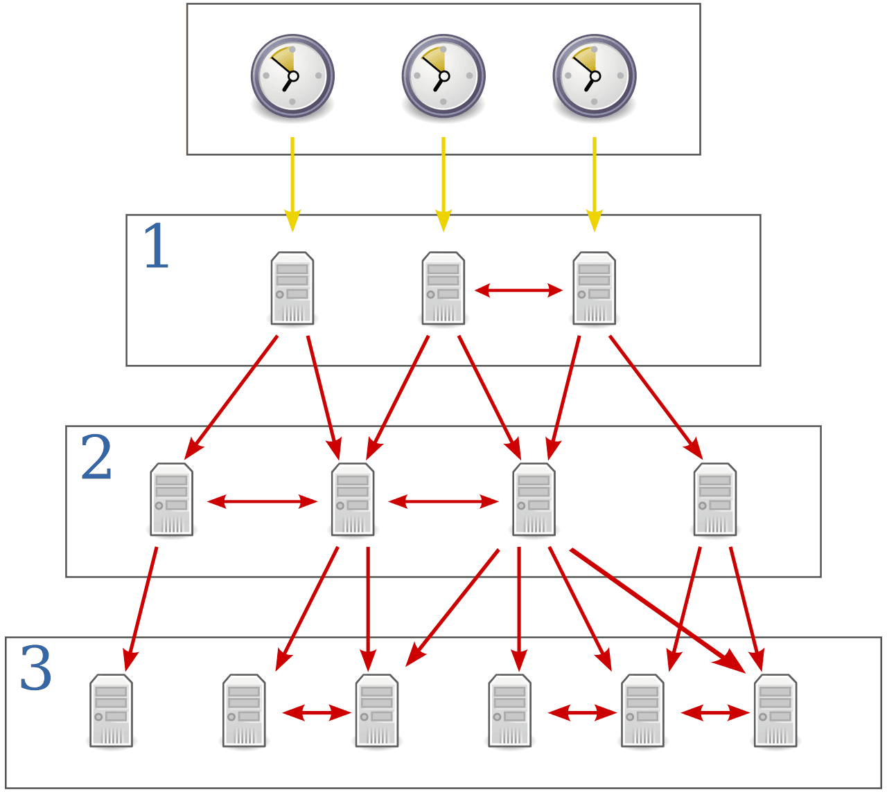

TimeNL
Is a Dutch internet time service, based on NTP (and PTP on request). This is an initiative of SIDN Labs.On this website we explain this stratum 1 NTP service and invite you to use it!
The Network Time Protocol (NTP) ensures that computers on the internet can synchronize their system clocks, so that they are always right down to the millisecond. Stable and accurate time is essential for the proper functioning of all kinds of applications. Accurate time is crucial for determining the order in which events occur and is a fundamental aspect of transaction integrity, logging / audit, troubleshooting and forensic investigations.
NTP is a recommended standard for governments, according to the Dutch comply-or-explain list? Our NTP service meets all the conditions set there.
The experts from SIDN Labs have set up this reliable NTP service and we offer it for free, free to use by everyone. On this website we tell you everything about it and we explain how you can make optimum use of TimeNL.
How do I set TimeNL?
Select the system for which you want to set TimeNL below.
You can specify multiple NTP servers here, separated by a comma. This can be done on the command line through systemsetup -setnetworktimeserver "ntp.time.nl" (activate this via /usr/sbin/systemsetup -setusingnetworktime on). You can also include multiple NTP servers directly in the /private/etc/ntp.conf file.


The illustrations above explain the steps for a workstation. If you are a system administrator, take a look at Microsoft's explanation of the Windows Time Service.
# Example 1: SIDN's ntp.time.nl (as prefered NTP server)
server ntp.time.nl iburst prefer
# Example 2: SIDN's ntp.time.nl with authentication (not standard possible, but possible upon request)
server ntp.time.nl iburst key 1
Under Unix / Linux / BSD / etc. different NTP packages are available, such as NTP, NTPsec, Chrony, OpenNTPD, etc. Usually they have an ntp.conf file (sometimes also called ntpd.conf) to configure the NTP server. An example of this is given above, but also consult the documentation for the relevant package, because there may be differences in detail. For example, Ubuntu works with timesyncd, which sometimes gets in the way when another NTP package is required. But, if you don't want another NTP package, adjusting timesyncd is simple. In short, this comes down to; edit /etc/systemd/timesyncd.conf. See man timesyncd.conf. There is a lot of information about this on the internet. And with OpenNTPD weight is used insted of prefer.
Another option is not to work with a daemon, but to synchronize your server with some regularity from CRON. In the example below, this happens weekly (at a fairly random time, not at minute '0', in order to avoid overload peaks), but more often of course is also allowed. Do not do it more than once per hour (and not on the hour, but somewhere randomly).
# Update ntpdate every wednsesday at 4 minutes past 11:00 u
04 11 * * 3 /usr/sbin/ntpdate ntp.time.nl 2>&1 >/dev/null
#
Cisco IOS and NX-OS:
router# config t
Enter configuration commands, one per line. End with CNTL/Z.
router(config)# no ntp server
router(config)# ntp server ntp.time.nl prefer
router(config)# copy running-config startup-config
In the example above, it is recommended to include a few other reliable stratum 1 servers in addition to ntp.time.nl (without the 'prefer' addition).
Juniper Junos:
system {
ntp {
server ntp.time.nl prefer;
}
}
In the example above, it is advisable to include a few other reliable stratum 1 servers in addition to ntp.time.nl (without the 'prefer' addition).
Frequently Asked Questions
Click on the question to expand the answer.
Answer: In short; because it fits in with our role.
SIDN Labs is the research team of SIDN. As a team we stand for the improvement and further security and innovation of the internet. We actively contribute to this. As the administrator of the .nl country domain, we have a reputation to uphold. We ensure that everyone, always, can reach the .nl domain names under our management on the basis of DNS (Domain Name System). We regard the worldwide availability of more than 5.8 million .nl domain names as a top priority that we take very seriously. That is why we have invested heavily in knowledge, expertise and a sound infrastructure. We have extensive experience with this so-called 'public core of the internet', which includes DNS. In our opinion, (public) NTP is also, in a sense, such an infrastructure service. And setting it up, maintaining it and making it available free of charge to the internet community is in line with our vision and really up our alley. We think that our experience and knowledge will be of great help in better putting the importance of NTP on the map. For that reason we make this service available free of charge and free of charge to everyone with the same passion and quality that you are used to from us for .nl and our other services.

As a registry of the .nl country domain, we are naturally quite proud of TimeNL and regard that as the (albeit unofficial) 'Dutch internet time service', as you can find in the United Kingdom,New Zealand, Sweden, Belgium, Germany and the United States.
Answer: We have done our best to set up a reliable and reliable NTP service.
You can expect us to make an effort to offer and maintain a good quality NTP service. We invest in knowledge and expertise, in infrastructure, in safety, in modern versions of software, in support of new standards, in sufficient capacity and in quality monitoring. The basic service is free and available to everyone, both via IPv4 and IPv6. If you want more, for example 'authenticated NTP', then that is negotiable, but we can possibly ask for compensation for this. That choice is ours.
Of course we keep a finger on the pulse regarding abuse [*]. We will not tolerate that. We therefore reserve the right to deny you access to the service in whole or in part through filtering or rate limiting. We also do everything we can to prevent abuse, both technically and legally.
Furthermore, we accept no liability whatsoever for not being able to use our service (properly). You use TimeNL at your own risk and therefore also have your own responsibility. Therefore, make sure that you do not rely solely on our NTP service where necessary, but, for example, set up 2 third-party NTP services in your own stratum. If you have any questions, we are happy to advise you. Incidentally, it is quite possible that in time we will expand our capacity and offer several separate NTP servers that you can then rely on. We reserve the right to make changes to our service without prior notice. Of course, under normal circumstances we will communicate well in advance, via the mailing list, this website and/or via our social media channels.
[*] We apply a fair-use policy. The default settings of most NTP software ensure that you remain well within our margins. Under normal circumstances, your systems do not need to approach us more than once per 30 minutes or thereabouts. Of course it is no problem if you, by way of exception, want to temporarily deviate from this. But don't overdo it.
Answer: Nothing really special. With the question about service levels we will tell you what you can expect from us and if you are a supplier of products in which you have included an NTP server, then also take a look a the answer to the question about that. Well, and further ... just this:
Disclaimer
Although we develop our (experimental) services with the greatest care, we do not guarantee that this service works (error-free). Use of this service is entirely at your own risk. SIDN (Labs) is not liable for any damage suffered as a result of the use or inability to use its (experimental) services and we reserve the right to terminate these services at any time without prior notice.
Answer: Of course TimeNL is not the only NTP service available on the internet. Fortunately. There are quite a few alternatives. Yet there are a number of points on which we distinguish ourselves from others. We are happy to list them here for you:
- Provided by SIDN, the trusted company behind .nl. A stable organization with a lot of operational knowledge.
- From the Netherlands, for the Netherlands - developed with care and managed by driven, curious nerds (😉) who have an eye (and heart) for 'the public core of the internet'. For more details, also take a look at the 'features and background information' section and the answer to the question 'which service levels can I expect?'
- No 'big tech' company, but an accessible party that you can call or email with questions and that have an eye for your privacy.
- Safer, because in certain cases 'authenticated NTP' is possible and time.nl is equipped with DNSSEC.
- Not only dependent on the American GPS system, but (among others) also linked to the European Galileo and the German DCF077 signal.
- Of course, in addition to IPv4, also accessible via IPv6.


Answer: This is partly due to the company size. You can let all your users communicate with our NTP server. But with larger numbers of users, it can be useful to configure your own internal NTP server and let the users synchronize their time with it. We call this a so-called stratum 2 server. This can in turn synchronize the time with (among others) our stratum 1 server. That way our server is less burdened and you don't have to open your possible firewall for every user. In even larger environments, this can be extended even further to stratum 3. The figure shows how such a structure works.
The yellow arrows indicate a direct link with a reference clock. Our stratum 1 server has those. The red arrows indicate a network connection (over the internet) with 'parent' servers. For example your stratum 2 or 3 server (s), which retrieve their time from (among others) our stratum 1 server (s).
We also recommend that you subscribe to our mailing list, so that you are always informed when there are developments.
It is usually a good idea not to rely on a single NTP server for time synchronization. Until we have expanded our server park, we recommend that you configure multiple NTP servers from other providers in the Netherlands. Such as (but not exclusively):
- chime1.surfnet.nl
- time1.esa.int
- ntp.vsl.nl
- ntp.ripe.net
With symbols we indicate the probable (primary) reference clock of these systems, so for GNSS (ie GPS and no others as far as we know) and for atomic clock. There are many more good NTP servers, both in the Netherlands and in the neighboring countries. So this was just a suggestion.
Answer: It is contrary to our terms of use to hard code 'ntp.time.nl' in, for example, firmware of your products, when these are marketed on a large scale. If you would like something similar, please contact us. We apply the same policy here as the NTP pool project. Which means we reserve a special name for your application ('ntp.brandname.time.nl') and discuss your wishes together, so that we can better anticipate the potential risc of capacity overruns. We also recommend that you subscribe to our mailing list, so that you are always informed when there are developments.
Answer: Provided; we are not lawyers. But we can report that NTP is a recommended standard on the so comply-or-explain list of the Standardisation Forum of the Dutch government. That may mean that you have to ensure good NTP time synchronization in your network and our service can play an excellent role in that.
At home and abroad, quality requirements that apply to time synchronization have been or are being considered. Requirements have also been formulated in a European context and by the Dutch Telecom Agency. See for example paragraph 4.15 of this document. Naturally, with our NTP service you meet the requirements formulated there. You might also find this document interesting. Well and if you are the expert in this area; feel free to catch up with us, because we like to learn!
Answer: We consider privacy and the GDPR of paramount importance. We do not store your data (= IP address) and do not use it for purposes other than for optimally maintaining this service. Read more about how we handle your privacy.
Answer: We inform you about this service via our mailing list, this website, the SIDN Labs website, Twitter and possibly also via the SIDN corporate website.
Answer:
- Mail to timekeeperssidn.nl
- Subscribe to mailing list
- Report security risks through our responsible disclosure arrangement
Answer: We have secured the domain name 'time.nl', under which we offer this service, through DNSSEC. If your system supports this, you can be confident that you will not be sent to the wrong IP address if you want to go to 'ntp.time.nl'. The correct time is also important for DNSSEC to function properly. In some situations this causes a chicken/egg problem for example when systems without an embedded Real Time Clock (RTC) start up, do not yet have a sense of time (they think it is 1-1-1970), but still attempt to do DNSSEC validation to find the IP address of 'ntp.time.nl' (which then fails) Solutions have already been devised for this, although it still remains a point of attention. For systems that are (roughly) synchronized in time, this is not a problem.
Answer: The standard (free and anonymous) public service does not have that. But authentication based on 'symmetric keys' is possible among registered users. Let us know if you need this and why. The decision as to whether we can subsequently offer this to you lies with us, as does the decision whether we will do this for free or for a small fee. We do set some requirements. For example, we do not use an MD5 algorithm for our keys. We also consider the 'autokey' protocol insufficiently safe. If you use OpenNTPd, so-called 'TLS constraints' may still be an option for you. We do not yet support the Network Time Security (NTS) protocol, but we are closely following the development of this standard. Keep an eye on our messages about this. With one of the other answers in the FAQ you can read how we will keep you informed.
Answer: Network Time Security (NTS) is a standard in development. We currently do not yet offer this in our production environment. But we closely follow the development of the standard and it could just be that we set up a pilot to learn from. The same applies to 'roughtime', if you wonder.
Answer: The Precision Time Protocol (PTP) is an even more accurate form of time synchronization, which has very specific applications. We do not offer this as standard, but it is possible. If you are interested, please contact us.
Answer: We have considered, but we wanted to make something beautiful. So not as simple as a JavaScript thing that actually shows no more than the local time on your computer (even if it doesn't run smoothly), but rather a clock that shows whether your PC is running right or wrong. Until we found out that our friends at the German PTB had already made something that we can't really beat. Oh and is your device really 'in sync'? Then you might like this station clock.
Features and background information
The NTP service TimeNL from SIDN Labs is a so-called stratum 1 server with different reference clocks, which themselves are very precise atomic clocks. We synchronize not only with the American GPS system, but also with the European Galileo GNSS. That way we reduce dependence on an American system, which distinguishes us from many other NTP servers. As the first backup, we also synchronize to the German DCF077 radio signal. And as a second backup, we are still synchronizing with atomic clocks in the Netherlands (including that of VSL in Delft) en Belgiium. Our hardware (for enthusiasts: we use the M3000 from Meinberg, which we affectionately call "Arnold", after the maker and nickname of the silver pocket watch from Ruth Belville) automatically ensures that the most accurate reference clock is always chosen. This server is accessible via both a good (multi-homed) internet connection via both IPv4 and IPv6. In this way we are able to offer very precise time synchronization to many users. Of course we already have plans for the future. We will increase the number of NTP servers, if we can thereby increase the reliability of our service, and possibly make them accessible via BGP anycast, as we did for the DNS servers of the .nl domain.
It is also good to know that we do not do so-called 'leap smearing'. What might also be interesting to know is that ntp.time.nl is part of the NTP pool project. And there is much more like this to say, which we will certainly do with some regularity in the future. So keep an eye on this site (and possibly our mailinglijst) and let us know if you have any questions. See also the 'frequently asked questions' section, elsewhere on this page.

Operational status
'Galileo service degraded' - no impact for TimeNL.
NOTICE ADVISORY TO GALILEO USERS (NAGU) 2019025
UPDATE 2019-07-18 08:20 (UTC): Service restored
Start van TimeNL - status OK.
Also see the user statistics.